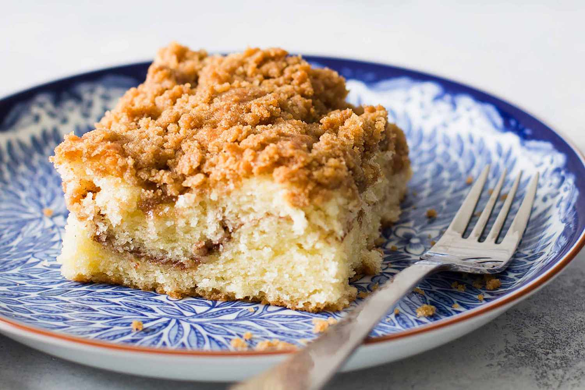

Coffee Cake

Description
Coffee cake, or kaffekuchen, is a single layer cake with a sweet, cinnamon-infused flavor and streusel top made from flour, butter, and sugar.
Streusel can also be layered inside of the cake like a filling.
Fruit variations are prevalent, with blueberry being the most common.
Nuts and additional spices are often added to create deeper flavor and texture.
Both yeast and baking powder can be used to give lift to coffee cakes, with some versions presented as a braided ring or lattice-style.
Ingredients
- 2 Large Eggs
- 1 cup Vegetable Oil
- 1 1/4 Cups Milk
- 1 Tablespoon Vanilla Extract
- 3 Cups All Purpose Flour
- 1 Cup White Sugar
- 1 Tablespoon Baking Powder
- 1/2 Teaspoon Salt
- 1 1/4 Cups Packed Light Brown Sugar
- 1 Tablespoon Ground Cinnamon
- 1/4 Cup Melted Butter
Steps
- Preheat the oven to 350°F. Lightly grease a 9-x-13-inch baking dish and set aside.
- In a large mixing bowl, mix eggs, oil, milk, and vanilla together.
- In a medium bowl, blend flour, sugar, baking powder, and salt.
- Add dry ingredients to the wet ingredients and mix well. Pour half the batter into the prepared baking dish.
- In a medium bowl, combine brown sugar and cinnamon and mix well.
- Sprinkle half of the cinnamon sugar on top of the batter in the pan.
- Carefully pour the remaining batter over the cinnamon sugar layer.
- Sprinkle the remaining cinnamon sugar mixture over the top.
- Drizzle the melted butter over the top, using more or less as desired.
- Bake for 35-40 minutes and serve warm.
Back